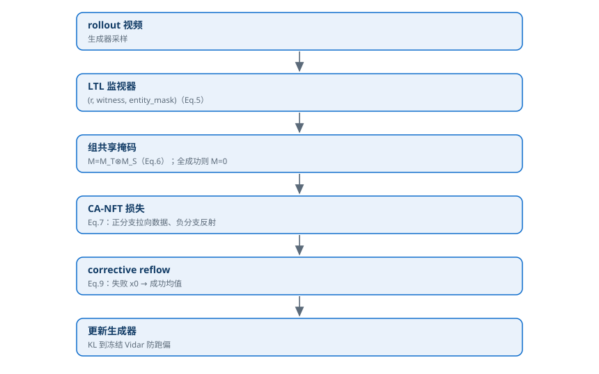

LTLf 监视器 (r, witness, mask) → 组共享掩码 → 带掩码 NFT → 失败样本向成功均值纠正
CreFlow 用线性时序逻辑（LTLf）把长程任务写成规格，监视器给二值奖励与违例位置；训练用 credit-aware NFT（Eq.7）+ corrective reflow（Eq.9），只在违例区更新。
| 项 | 值 |
|---|---|
| 规格 | 离线 coding agent 每任务合成 LTLf，RL 期间冻结 |
| 监视器 | r∈{0,1} + witness（帧/子句）+ SAM3 实体 mask |
| 损失 | Eq.7 CA-NFT + Eq.9 corrective reflow + KL 到冻结 Vidar |
| 结果 | 组合约束满足率提升（论文表格，L2） |

物理：监视器指出「错在哪一帧、哪个物体」；掩码把梯度限制在违例区，其余保留预训练先验。
物理：哪一帧违反了哪条时序约束、涉及哪个物体。
物理：只在「出错帧 × 相关实体」加梯度；整组成功则 M≡0（组优势为 0）。
物理：好样本拉向数据速度；坏样本反射推开（v⁺=(1−β)v_old+βv_θ，v⁻=(1+β)v_old−βv_θ）。
物理：同条件下成功样本的「平均结局」，给失败样本具体靠拢点。
物理：失败样本单步反推 x0 → 拉向成功均值；只对失败集。
按论文 §3–§4.3 重建；无官方代码。
def ltl_monitor(video, spec):
# 物理：视频 → 实体状态轨迹 → 逐子句验证
return spec.check(frames(video)) # (r, witness, entity_masks)，Eq.5
def group_mask(witnesses, entity_masks):
# 物理：只惩罚「错的那几帧、那几个物体」
M_T = union_frames(witnesses) # [T]
M_S = union_entities(entity_masks) # [T,H,W]
return M_T.view(-1,1,1) * M_S # Eq.6
def ca_nft_loss(vpm, x_t, v_hat, r, M, beta):
# 物理：正分支强化好样本，负分支反射坏样本
v_plus = (1-beta)*v_old + beta*v_theta
v_minus = (1+beta)*v_old - beta*v_theta
loss_pos = r * (M.unsqueeze(0)*(v_plus -v_hat)).pow(2)
loss_neg = (1-r) * (M.unsqueeze(0)*(v_minus-v_hat)).pow(2)
return (loss_pos + loss_neg).mean() # Eq.7
def corrective_reflow(vpm, rollouts, M, t):
# 物理：成功均值 + 失败样本单步 x0 靠拢
x_bar = mean([r.x0 for r in rollouts if r.reward == 1]) # Eq.8
loss = 0.0
for r in rollouts:
if r.reward != 0: continue
x0_hat = r.x_t - t*vpm(r.x_t, t, r.cond)
loss += (M.unsqueeze(0)*(x0_hat - x_bar)).pow(2).mean() # Eq.9
return loss返回 方法精读 Wiki 索引 ｜ 博客：VLA/WAM 的 RL 后训练实现版